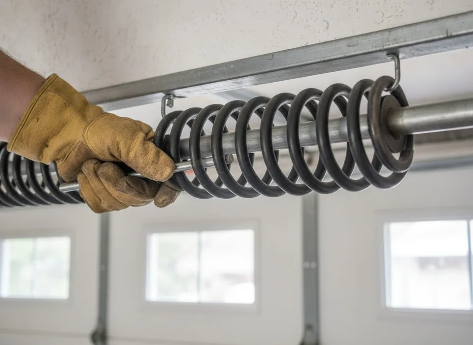

Garage Door Spring Repair in West Vancouver
A snapped spring is the #1 reason a garage door stops working — and the most common same-day call we run across the North Shore. Here's exactly what we replace, why, and what it costs.
Updated June 2026
If your door suddenly won't lift, you heard a loud bang from the garage, or the opener strains and gives up, you've almost certainly broken a torsion spring. The spring — not the opener — does the heavy lifting, so when it goes, the door becomes a 150–250 lb dead weight. Please don't force it.
Torsion vs. extension springs
Most West Vancouver homes use torsion springs mounted on a steel shaft above the door — they're safer, quieter and longer-lived. Older or lighter doors may use extension springs running along the tracks. We replace both, but we'll often recommend converting to torsion for a smoother, more durable system.
Why we replace springs in pairs
If you have two springs and one breaks, the second is the same age and usually within months of failing too. Replacing both at once means one service call instead of two, a balanced door, and longer life overall. That's why our two-spring option includes brand-new lift cables free — the cables wear alongside the springs.
High-cycle springs & our coastal climate
A standard spring is rated around 10,000 cycles (~7 years of normal use). On the North Shore, salt air and damp accelerate corrosion, so for busy households or homes near the water we recommend high-cycle springs — 20,000–30,000 cycles — often the last spring you'll ever buy.
- Free safety inspection with every spring job
- Free cables on both two-spring options
- Oil-tempered, corrosion-resistant springs stocked on every truck
- Same-day replacement in most cases
- Workmanship warranty on parts & labour
Why you shouldn't DIY a spring
Torsion springs hold enormous stored energy. A slip with the winding bars can cause serious injury. This is the one repair every manufacturer says to leave to a trained technician — and it's routine work for us.
Spring pricing — clear and upfront
Prices hidden by default — reveal them with “Show pricing” in the footer.
Frequently Asked Questions
Please don't. The door is extremely heavy without a working spring and can fall. Disconnect the opener (red cord) and call us — forcing it can damage the opener, tracks and panels.
Most replacements take 45–90 minutes on site, and we carry the common sizes on the truck, so it's usually a same-day, one-visit fix.
Our single-spring replacement is a flat upfront rate; two springs with free cables and two high-cycle springs are priced higher for the added parts and lifespan. Tap “Show pricing” in the footer to see exact numbers — no hidden fees.
If you have two springs, we strongly recommend replacing both. They wear at the same rate, and doing both keeps the door balanced and saves a second call.

Let's Get Your Garage Door Working Again
Same-day appointments are often available. Call now or request your free, no-obligation quote.